Organiser
Retrouvez vos titres, versions et projets dans une bibliothèque faite pour la musique.
Stockez, organisez et partagez vos créations. Faites-les découvrir aux professionnels sur Bridge Talents, quand vous le décidez.
Un espace privé pour commencer. Vous choisissez ce que vous publiez.
Tout pour organiser, collaborer et partager.
Retrouvez vos titres, versions et projets dans une bibliothèque faite pour la musique.
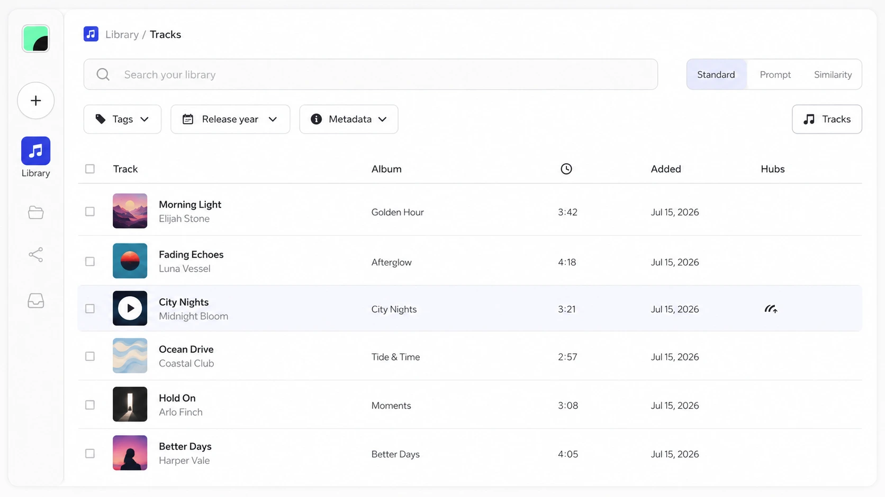
Retrouvez vos titres, versions et projets dans une bibliothèque faite pour la musique.
Invitez les bonnes personnes dans vos projets et travaillez ensemble, sans perdre le fil.
Créez des espaces et rassemblez vos sélections en quelques gestes.
Décidez quoi partager, avec qui et comment, sans ouvrir toute votre bibliothèque.
Presskit, sync, discographie, live kit, stems, remix contest, musique à l’image… à chacun son format.

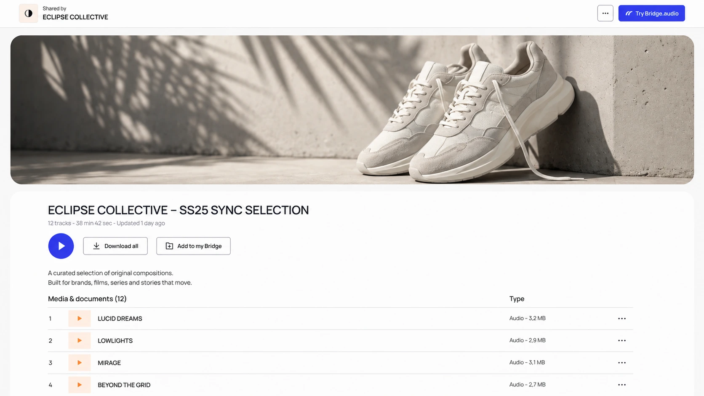

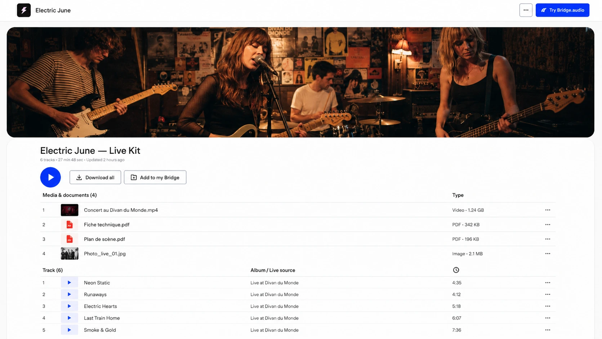

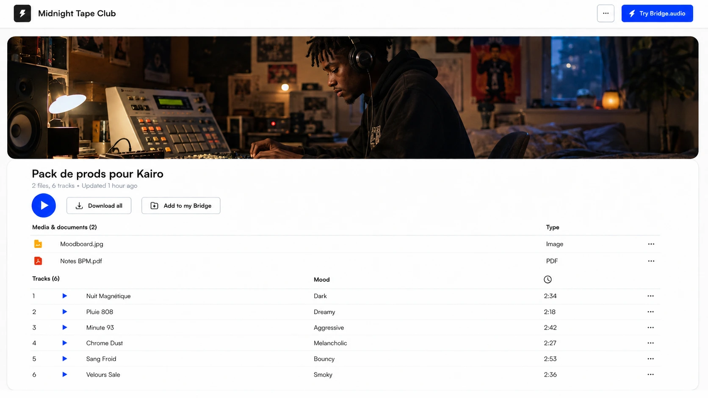
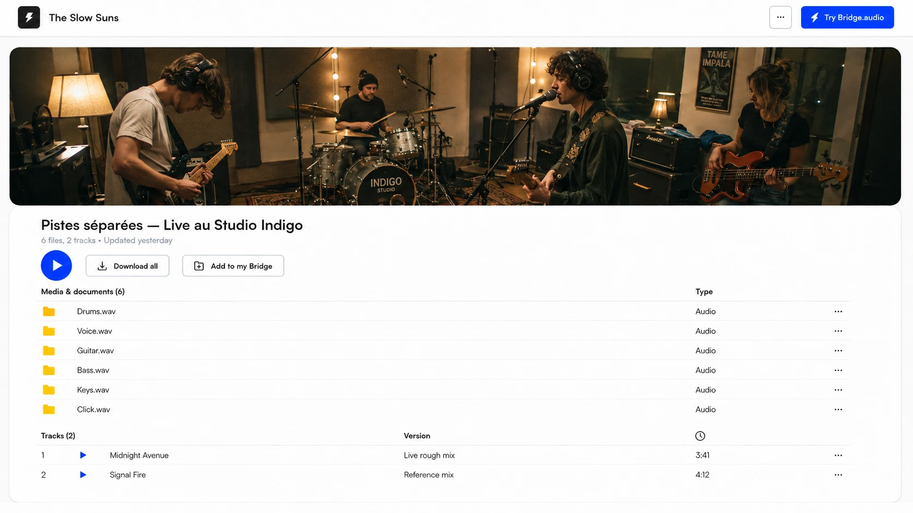
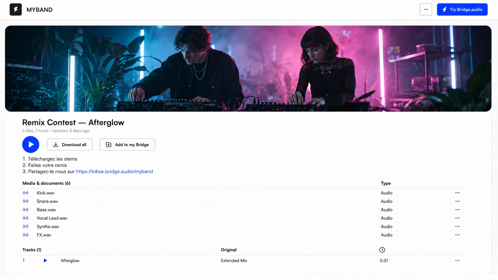
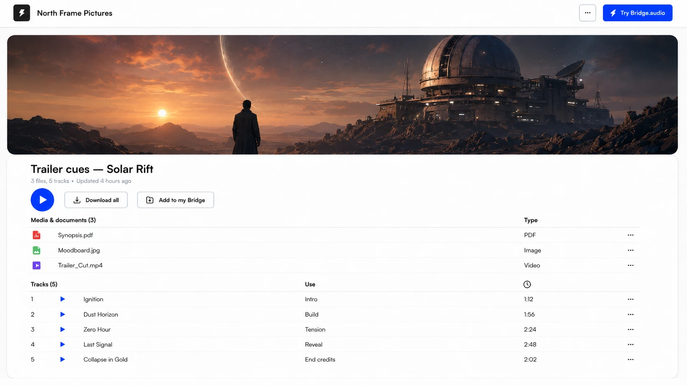
Conservez vos créations dans votre cloud personnel et rendez vos titres publiés plus faciles à découvrir sur Bridge Talents.
Les créations publiées sur Bridge Talents sont indexées pour aider les professionnels à les découvrir. Votre bibliothèque personnelle reste privée.
Partagez vos morceaux avec les personnes de votre choix.
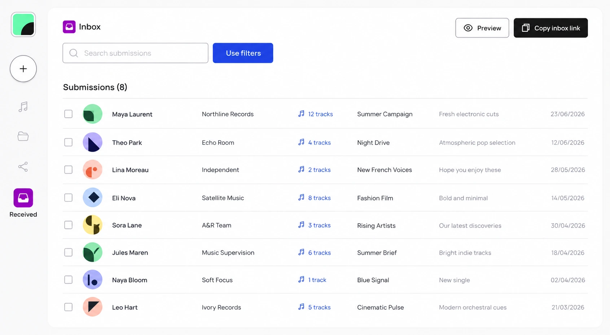
Retrouvez vos fichiers et leurs informations essentielles.
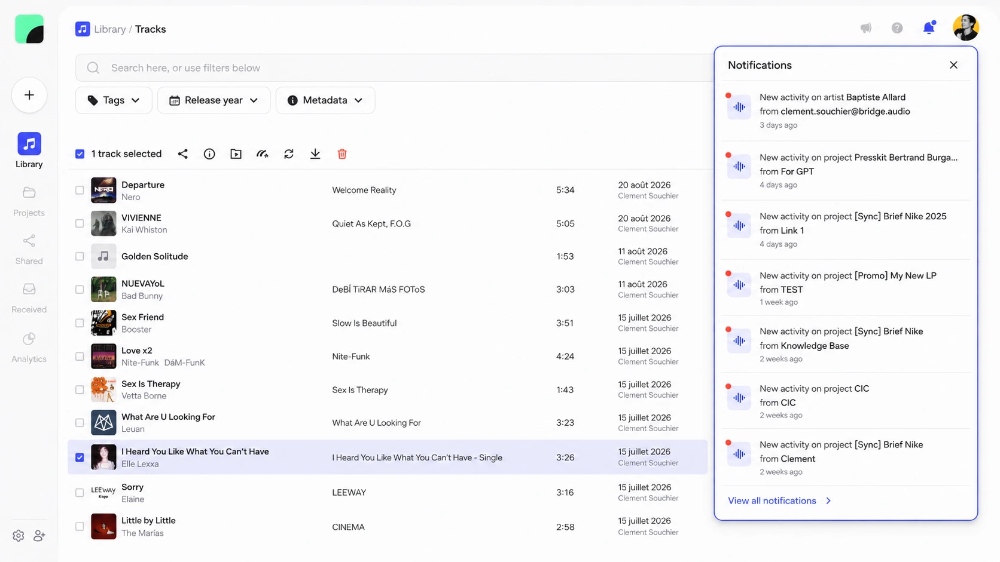
Gardez vos morceaux organisés au même endroit.

Choisissez les titres à publier : ils deviennent accessibles aux professionnels qui recherchent de la musique sur Bridge Talents.
Choisissez les titres que vous souhaitez rendre découvrables sur Bridge Talents.
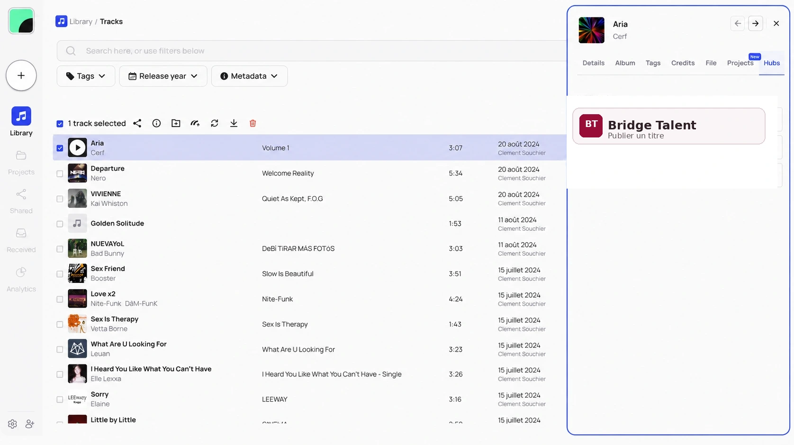
Choisissez les titres que vous souhaitez rendre découvrables sur Bridge Talents.
Vos titres publiés peuvent apparaître dans les recherches des professionnels.
Des professionnels peuvent écouter les morceaux que vous avez choisi de publier.
Vos créations publiées peuvent susciter des prises de contact.
Suivez les interactions disponibles autour de vos titres publiés.
Un cloud pensé pour les créateurs, connecté à un écosystème utilisé par les professionnels de la musique. Vos titres publiés sur Bridge Talents peuvent être découverts par les professionnels qui y recherchent de la musique.
SACEM Cloud et Bridge.audio sont deux offres distinctes : les fonctionnalités professionnelles de Bridge.audio ne sont pas incluses dans les abonnements SACEM Cloud.
Découvrir Bridge.audio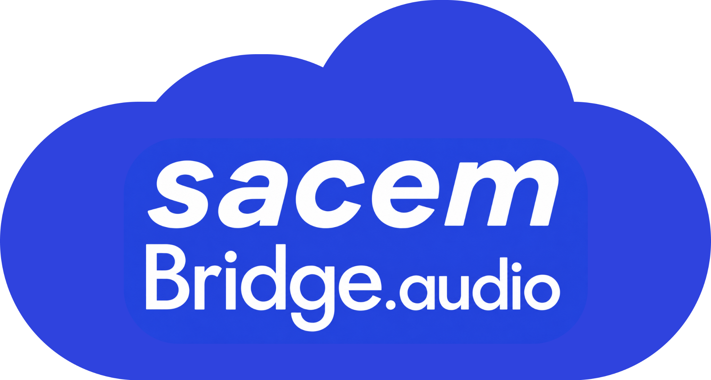
Pour les sociétaires SACEM qui choisissent un plan Creator, Creator Plus ou Creator Max avec paiement annuel.
Starter : 1,99 € TTC/mois pour les sociétaires SACEM, garanti pendant toute la durée du partenariat. Creator, Creator Plus et Creator Max : 50 % de réduction sur les 12 premiers mois de la première souscription annuelle éligible uniquement. Pas de réduction sur les abonnements mensuels.
Les nouveaux comptes créés via la SACEM.
Un cloud pour vos créations, connecté à l’écosystème Bridge.audio.
Un espace de travail privé pour travailler et des Bridge Talents pour être découvert.
Sans CB requise. Connectez-vous aussi avec vos identifiants SACEM et découvrez votre espace de travail ainsi que les Bridge Talents.
Sans CB requise.